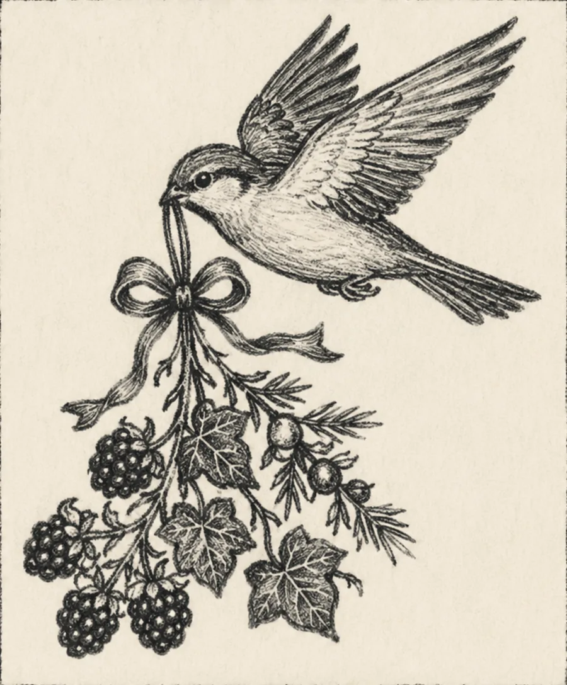

I write folkloric fiction and personal essays from a creaky old farmhouse in the Shenandoah Valley, where the Blue Ridge holds the horizon and the garden mostly forgives me.
My work tells slow, small stories — centered on relationships, grounded in stirring plot, and rooted in the holiness of ordinary days. I believe we live in a world of already and not yet, and that meaning is something you make with your hands: bread, gardens, quilts, sentences.
Every other week I send a letter — essays, recipes, gardening, and handcrafts that speak to a slow, small life filled with meaning. It’s the truest introduction I can offer.
I’m currently at work on a novel, The Flower Farm at the End of the World, and a novella set in the same fields.
Read the letters →Making meaning in a world of already and not yet.
Essays, recipes, gardening, and handcrafts. No noise; just the good, slow stuff.
A novel on the way, and a novella set in the same fields — first word of both goes to readers of the letters.
Harrisonburg, Virginia — where the stories, the seasons, and the suppers all come from.
What you read in middle school makes you who you are. These twelve books (and spoiler, most of them are series!) are meant for you to read alongside your middle schooler, to foster all that is weird and wonderful in your child, and to remind us older folks to make friends with the middle schooler who still lives inside us all. See what's inside →
You'll also get Fletchling Thoughts, every other week. Unsubscribe anytime.